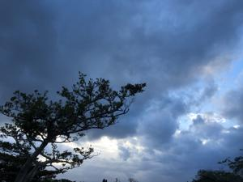
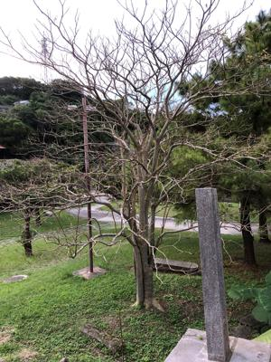

うるがいの話 ある日
最新: ドアチェーンロック【うるがいの話 ある日】とは 一日だけのプログです
『うるがいの話』の最新一日だけのプログで、通信料が少なく経済的だ。カニの画像をクリックすると全ての日付が載る『うるがいの話』サイトを表示します
|
|
【うるがいの話】 うるがい(ｳﾙｶﾞｲ urugai)とは、『もずくがに』の名前でとても大きくなります。 |
|---|---|
|
|
【カミマヤーの話】 猫のことを方言でマヤーといいます。カミマヤー（kamimayaa）とは、神の猫のことです。 |
|
【たながぁの音楽】 たながぁ（ﾀﾅｶﾞｰ tanagaa）とは手長えびのことで、何種類かあり大きいのは車 エビぐらいになります。 |

|
【ぶながぁの話】 ぶながぁ(ﾌﾞﾅｶﾞｰ bunagaa)とは、赤い髪の毛、赤い身体、そして身長は１ｍ２０ｃｍ ぐらい、川の蟹を食べているの目撃された。場所は沖縄県国頭郡大宜味村のと ある村僕の隣近所に住んでいる爺さんから、聞いた話です。 |
|
|
【ギーマの話】 ギーマ(giima)とは、山原の里山に咲くスズランに似た、 花を付けます。実は食べられます、 気が付くと口の周りが紫になっています。 |
2022年12月09日 (金）ドアチェーンロック
16:50
 
ヨメのお母さんは、ドアのチェーンをロックするクセがあり、ヨメが外して置
いてとお願いするも効果がない。今日のような、寒く風が強く、雨交じりだと
チェーンを開けるまで廊下で待たないといけない。とうとう、キレて夜は行か
ないことになった、確かに無理はいけない。お母さんは認知能力が徐々に低下
していく。そして二言目には、『何が何だか分からない、早くお迎えに来て欲
しい』という。聞かされるほうは大変である。
『仏教を読む３ 一切は空〔般若心経〕＋〔金剛般若経〕』より引用
97 執着しない心
お年寄りなどに話を聞いてみると、「早く死にたい」という人ほど、死にたが
ってはいない。それはあたりまえのことでもありますし、人間は誰しもそう思
うことだってあるはずです。「こんな年寄りは何の役にも立たぬ、早くお迎え
がくれば良いのに」――と口癖のようにいう人ほど、本当は死にたくないので
す。
１６時４５分 ビットコインの総資産 ￥６、８００（↑１３５）